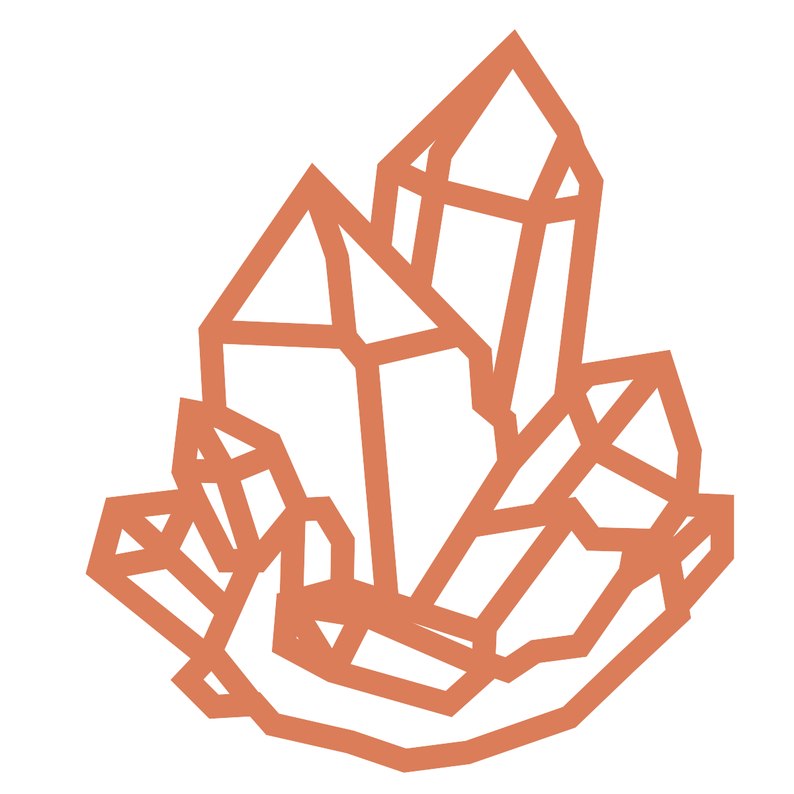
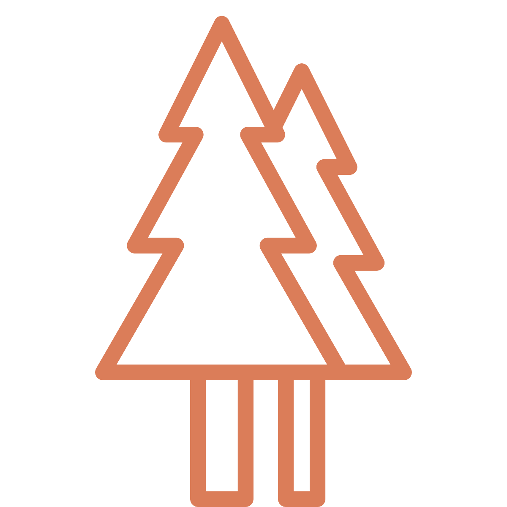
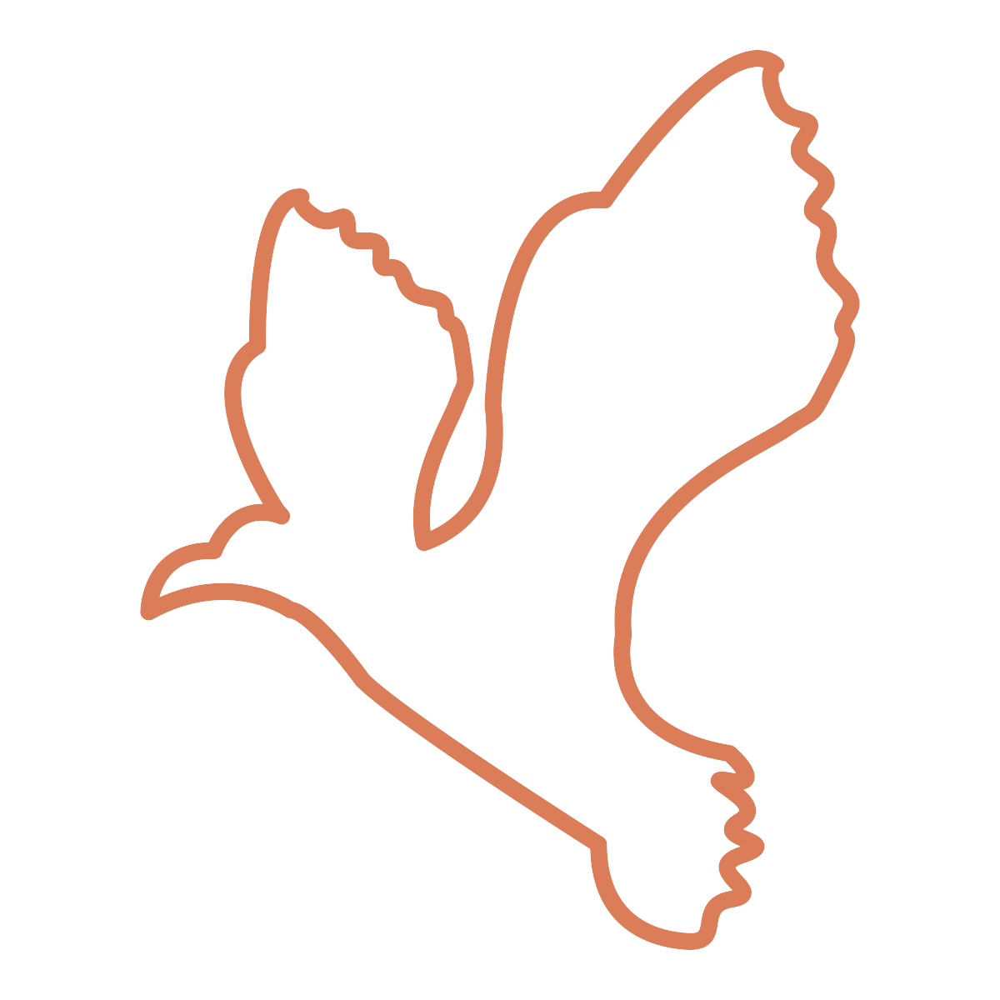
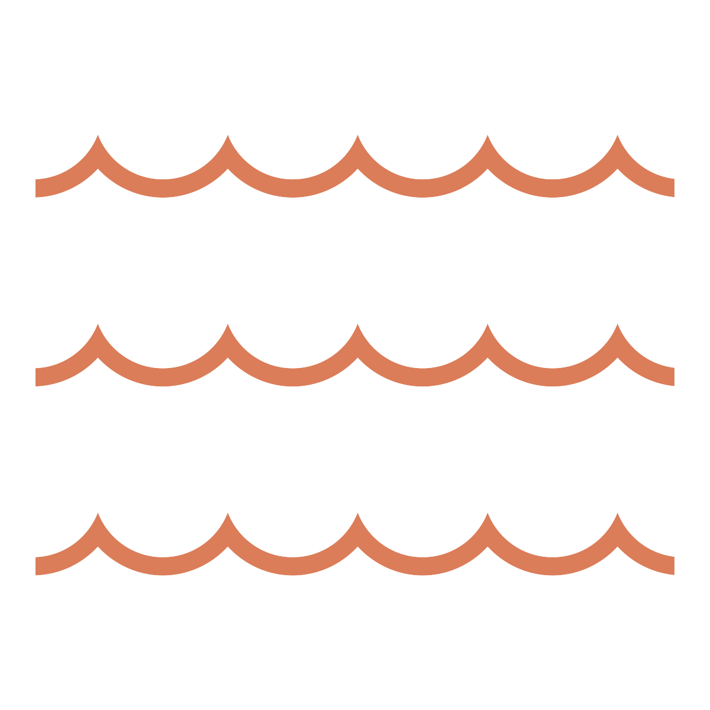
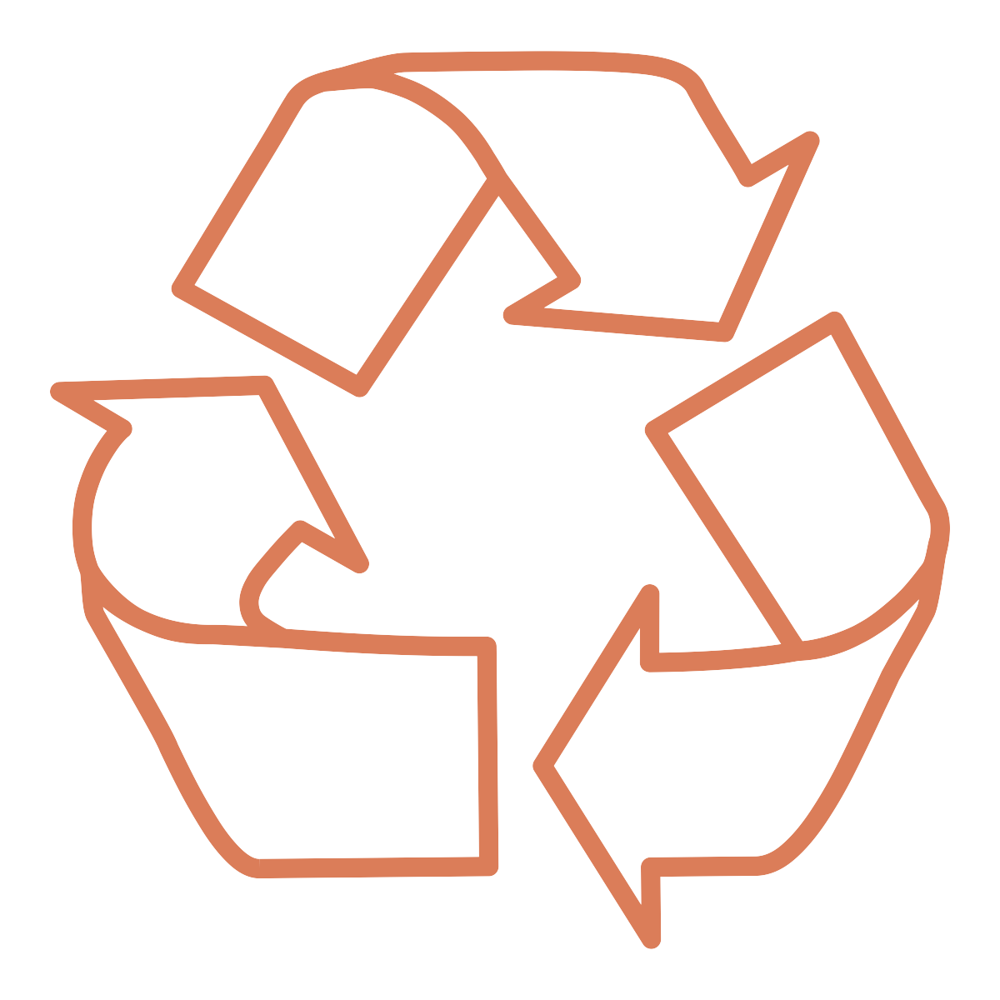

Trails

Geology

Tree Nursery

Birding

Aquatics
Museum

Natural Resources
Astronomy
Electives!
Hiking the geology trail is an incredible adventure! You'll trek all the way to Soda Springs bridge
and learn about how the earth has been shaped over millions of years, as well as when the next earthquake may happen in your
backyard.
Close
At the tree nursery, you'll have the opportunity to care for nature! There's tons of way to get your hands dirty,
from planting lettuce to repotting a tiny oak sapling to sorting worms in the compost bin. Along the way, you'll learn about the cycle of
energy and nutrients through the ecosystem!
Close
Learn about adaptations and energy flow as you witness some of the SSC's most beautiful birds! Armed
with your very own pair of binoculars, you'll be able to find acorn woodpeckers, ravens, and, depending on the time of year,
some turkeys or red-tail hawks!
Close
Witness adaptations and energy flow in action as you collect your very own aquatic species in
SSC's very own Bear Creek! If you're lucky, you may be able to find a California Newt swimming in the shallow riverbed!
Close
Bears and owls and mountain lions, oh my! Review all of the information you've learned throughout the week
at the museum. Included in your time for discovery: a talk with our raptor specialist (and maybe even a raptor or two)!
Close
The earth is in danger! Travel to the SSC's very own fairy ring, witness the incredible natural resources all
around you, and come up with solutions about how you can do your part to protect them.
Close
Did you know that when you see a star, you're time-traveling into the past?
Travel to the SSC's incredible telescope or inspiring planetarium and learn about some of the incredible
constellations in the night sky, as well as the science and stories behind them.
Close
The sky is the limit-literally! Take your pick of trails available for the end-of-the-week elective trail!
Find your own piece of quartz at the Quartz Mine, slip and slide your way to Dead Man's Falls, or see The SSC like never before from
top of Sky trail. These and many more adventures await you!
Close